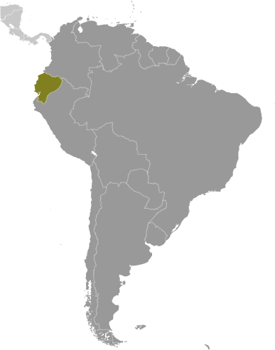
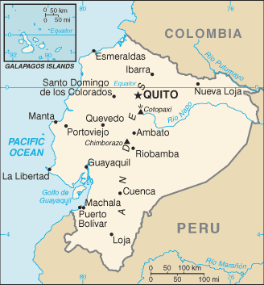
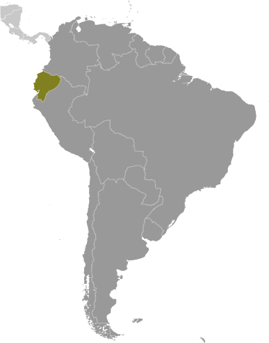
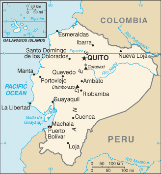

South America :: ECUADOR
Introduction :: ECUADOR
-
What is now Ecuador formed part of the northern Inca Empire until the Spanish conquest in 1533. Quito became a seat of Spanish colonial government in 1563 and part of the Viceroyalty of New Granada in 1717. The territories of the Viceroyalty - New Granada (Colombia), Venezuela, and Quito - gained their independence between 1819 and 1822 and formed a federation known as Gran Colombia. When Quito withdrew in 1830, the traditional name was changed in favor of the "Republic of the Equator." Between 1904 and 1942, Ecuador lost territories in a series of conflicts with its neighbors. A border war with Peru that flared in 1995 was resolved in 1999. Although Ecuador marked 30 years of civilian governance in 2004, the period was marred by political instability. Protests in Quito contributed to the mid-term ouster of three of Ecuador's last four democratically elected presidents. In late 2008, voters approved a new constitution, Ecuador's 20th since gaining independence. General elections were held in February 2013, and voters reelected President Rafael CORREA.
Geography :: ECUADOR
-
Western South America, bordering the Pacific Ocean at the Equator, between Colombia and Peru2 00 S, 77 30 WSouth Americatotal: 283,561 sq kmland: 276,841 sq kmwater: 6,720 sq kmnote: includes Galapagos Islandscountry comparison to the world: 75slightly smaller than Nevadatotal: 2,237 kmborder countries (2): Colombia 708 km, Peru 1,529 km2,237 kmterritorial sea: 200 nmexclusive economic zone: 200 nmcontinental shelf: 200 nmnote: Ecuador has declared its right to extend its continental shelf to 350nm measured from the baselines of the Galapagos Archipelagotropical along coast, becoming cooler inland at higher elevations; tropical in Amazonian jungle lowlandscoastal plain (costa), inter-Andean central highlands (sierra), and flat to rolling eastern jungle (oriente)mean elevation: 1,117 melevation extremes: lowest point: Pacific Ocean 0 mhighest point: Chimborazo 6,267 mnote: because the earth is not a perfect sphere and has an equatorial bulge, the highest point on the planet farthest from its center is Mount Chimborazo not Mount Everest, which is merely the highest peak above sea levelpetroleum, fish, timber, hydropoweragricultural land: 29.7%arable land 4.7%; permanent crops 5.6%; permanent pasture 19.4%forest: 38.9%other: 31.4% (2011 est.)15,000 sq km (2012)nearly half of the population is concentrated in the interior in the Andean intermontane basins and valleys, with large concentrations also found along the western coastal strip; the rainforests of the east remain sparsely populatedfrequent earthquakes; landslides; volcanic activity; floods; periodic droughtsvolcanism: volcanic activity concentrated along the Andes Mountains; Sangay (5,230 m), which erupted in 2010, is mainland Ecuador's most active volcano; other historically active volcanoes in the Andes include Antisana, Cayambe, Chacana, Cotopaxi, Guagua Pichincha, Reventador, Sumaco, and Tungurahua; Fernandina (1,476 m), a shield volcano that last erupted in 2009, is the most active of the many Galapagos volcanoes; other historically active Galapagos volcanoes include Wolf, Sierra Negra, Cerro Azul, Pinta, Marchena, and Santiagodeforestation; soil erosion; desertification; water pollution; pollution from oil production wastes in ecologically sensitive areas of the Amazon Basin and Galapagos Islandsparty to: Antarctic-Environmental Protocol, Antarctic Treaty, Biodiversity, Climate Change, Climate Change-Kyoto Protocol, Desertification, Endangered Species, Hazardous Wastes, Ozone Layer Protection, Ship Pollution, Tropical Timber 83, Tropical Timber 94, Wetlandssigned, but not ratified: none of the selected agreementsCotopaxi in Andes is highest active volcano in world
People and Society :: ECUADOR
-
16,290,913 (July 2017 est.)country comparison to the world: 67noun: Ecuadorian(s)adjective: Ecuadorianmestizo (mixed Amerindian and white) 71.9%, Montubio 7.4%, Amerindian 7%, white 6.1%, Afroecuadorian 4.3%, mulatto 1.9%, black 1%, other 0.4% (2010 est.)Spanish (Castilian) 93% (official), Quechua 4.1%, other indigenous 0.7%, foreign 2.2%note: (Quechua and Shuar are official languages of intercultural relations; other indigenous languages are in official use by indigenous peoples in the areas they inhabit) (2010 est.)Roman Catholic 74%, Evangelical 10.4%, Jehovah's Witness 1.2%, other 6.4% (includes Mormon Buddhist, Jewish, Spiritualist, Muslim, Hindu, indigenous religions, African American religions, Pentecostal), atheist 7.9%, agnostic 0.1%note: data represent persons at least 16 years of age from five Ecuadoran cities (2012 est.)Ecuador's high poverty and income inequality most affect indigenous, mixed race, and rural populations. The government has increased its social spending to ameliorate these problems, but critics question the efficiency and implementation of its national development plan. Nevertheless, the conditional cash transfer program, which requires participants' children to attend school and have medical check-ups, has helped improve educational attainment and healthcare among poor children. Ecuador is stalled at above replacement level fertility and the population most likely will keep growing rather than stabilize.An estimated 2 to 3 million Ecuadorians live abroad, but increased unemployment in key receiving countries - Spain, the United States, and Italy - is slowing emigration and increasing the likelihood of returnees to Ecuador. The first large-scale emigration of Ecuadorians occurred between 1980 and 2000, when an economic crisis drove Ecuadorians from southern provinces to New York City, where they had trade contacts. A second, nationwide wave of emigration in the late 1990s was caused by another economic downturn, political instability, and a currency crisis. Spain was the logical destination because of its shared language and the wide availability of low-skilled, informal jobs at a time when increased border surveillance made illegal migration to the US difficult. Ecuador has a small but growing immigrant population and is Latin America's top recipient of refugees; 98% are neighboring Colombians fleeing violence in their country.0-14 years: 27.08% (male 2,250,000/female 2,161,123)15-24 years: 18.35% (male 1,519,255/female 1,469,372)25-54 years: 39.59% (male 3,145,954/female 3,303,520)55-64 years: 7.53% (male 599,032/female 628,477)65 years and over: 7.45% (male 576,196/female 637,984) (2017 est.)total dependency ratio: 55.6youth dependency ratio: 45.1elderly dependency ratio: 10.4potential support ratio: 9.6 (2015 est.)total: 27.7 yearsmale: 27 yearsfemale: 28.4 years (2017 est.)country comparison to the world: 1421.28% (2017 est.)country comparison to the world: 8717.9 births/1,000 population (2017 est.)country comparison to the world: 1025.1 deaths/1,000 population (2017 est.)country comparison to the world: 1910 migrant(s)/1,000 population (2017 est.)country comparison to the world: 79nearly half of the population is concentrated in the interior in the Andean intermontane basins and valleys, with large concentrations also found along the western coastal strip; the rainforests of the east remain sparsely populatedurban population: 64.2% of total population (2017)rate of urbanization: 1.8% annual rate of change (2015-20 est.)Guayaquil 2.709 million; QUITO (capital) 1.726 million (2015)at birth: 1.05 male(s)/female0-14 years: 1.04 male(s)/female15-24 years: 1.03 male(s)/female25-54 years: 0.95 male(s)/female55-64 years: 0.96 male(s)/female65 years and over: 0.91 male(s)/femaletotal population: 0.99 male(s)/female (2016 est.)64 deaths/100,000 live births (2015 est.)country comparison to the world: 86total: 16.4 deaths/1,000 live birthsmale: 19.4 deaths/1,000 live birthsfemale: 13.2 deaths/1,000 live births (2017 est.)country comparison to the world: 98total population: 77 yearsmale: 74 yearsfemale: 80.1 years (2017 est.)country comparison to the world: 792.19 children born/woman (2017 est.)country comparison to the world: 9980.1% (2007/12)9.2% of GDP (2014)country comparison to the world: 351.67 physicians/1,000 population (2011)1.6 beds/1,000 population (2011)improved:urban: 93.4% of populationrural: 75.5% of populationtotal: 86.9% of populationunimproved:urban: 6.6% of populationrural: 24.5% of populationtotal: 13.1% of population (2015 est.)improved:urban: 87% of populationrural: 80.7% of populationtotal: 84.7% of populationunimproved:urban: 13% of populationrural: 19.3% of populationtotal: 15.3% of population (2015 est.)0.3% (2016 est.)country comparison to the world: 8133,000 (2016 est.)country comparison to the world: 64<1000 (2016 est.)degree of risk: highfood or waterborne diseases: bacterial diarrhea, hepatitis A, and typhoid fevervectorborne diseases: dengue fever and malarianote: active local transmission of Zika virus by Aedes species mosquitoes has been identified in this country (as of August 2016); it poses an important risk (a large number of cases possible) among US citizens if bitten by an infective mosquito; other less common ways to get Zika are through sex, via blood transfusion, or during pregnancy, in which the pregnant woman passes Zika virus to her fetus (2016)19.9% (2016)country comparison to the world: 1086.4% (2012)country comparison to the world: 824.9% of GDP (2015)country comparison to the world: 94definition: age 15 and over can read and writetotal population: 94.4%male: 95.4%female: 93.3% (2016 est.)total: 15 yearsmale: 15 yearsfemale: 16 years (2012)total: 11.8%male: 9.4%female: 15.7% (2015 est.)country comparison to the world: 96
Government :: ECUADOR
-
conventional long form: Republic of Ecuadorconventional short form: Ecuadorlocal long form: Republica del Ecuadorlocal short form: Ecuadoretymology: the country's position on the globe, straddling the Equator, accounts for its Spanish namepresidential republicname: Quitogeographic coordinates: 0 13 S, 78 30 Wtime difference: UTC-5 (same time as Washington, DC, during Standard Time)24 provinces (provincias, singular - provincia); Azuay, Bolivar, Canar, Carchi, Chimborazo, Cotopaxi, El Oro, Esmeraldas, Galapagos, Guayas, Imbabura, Loja, Los Rios, Manabi, Morona-Santiago, Napo, Orellana, Pastaza, Pichincha, Santa Elena, Santo Domingo de los Tsachilas, Sucumbios, Tungurahua, Zamora-Chinchipe24 May 1822 (from Spain)Independence Day (independence of Quito), 10 August (1809)many previous; latest approved 20 October 2008; amended 2011, 2015; note - a 2015 constitutional amendment lifting presidential term limits became effective 2017 (2017)civil law based on the Chilean civil code with modifications; traditional law in indigenous communitieshas not submitted an ICJ jurisdiction declaration; accepts ICCt jurisdictioncitizenship by birth: yescitizenship by descent: yesdual citizenship recognized: noresidency requirement for naturalization: 3 years18-65 years of age, universal and compulsory; 16-18, over 65, and other eligible voters, voluntarychief of state: President Lenin MORENO Garces (since 24 May 2017); Vice President Jorge GLAS Espinel (since 24 May 2013); note - the president is both chief of state and head of governmenthead of government: President Lenin MORENO Garces (since 24 May 2017); Vice President Jorge GLAS Espinel (since 24 May 2013)cabinet: Cabinet appointed by the presidentelections/appointments: president and vice president directly elected on the same ballot by absolute majority popular vote in 2 rounds if needed for a 4-year term (eligible for a second term); election last held on 19 February 2017 with a runoff on 2 April 2017 (next to be held in 2021)election results: Lenin MORENO Garces elected president; percent of vote in second round - Lenin MORENO Garces (Alianza PAIS Movement) 51.1%, Guillermo LASSO (CREO) 48.9%description: unicameral National Assembly or Asamblea Nacional (137 seats; 116 members directly elected in single-seat constituencies by simple majority vote, 15 members directly elected in a single nationwide constituency by proportional representation vote, and 6 directly elected in multi-seat constituencies for Ecuadorians living abroad by simple majority vote; members serve 4-year terms)elections: last held on 19 February 2017 (next to be held in 2021)election results: percent of vote by party - PAIS 39.1%, SUMA 20.1%, PSC 15.9%, IP 3.8%, MUPP 2.7%; seats by party - PAIS 74, SUMA 34, PSC 15, ID 4, MUPP 4, Independents 3, PSP 2, Fuerza Ecuador 1; note - defections by members of National Assembly are commonplace, resulting in frequent changes in the numbers of seats held by the various partieshighest court(s): National Court of Justice or Corte Nacional de Justicia (consists of 21 judges including the chief justice and organized into 5 specialized chambers); Constitutional Court or Corte Constitucional (consists of 9 judges)judge selection and term of office: justices of National Court of Justice elected by the Judiciary Council, a 9-member independent body of law professionals; judges elected for 9-year, non-renewable terms, with one-third of the membership renewed every 3 years; Constitutional Court judges appointed by the executive, legislative, and Citizen Participation branches of government; judges appointed for 9-year non-renewable terms with one-third of the membership renewed every 3 yearssubordinate courts: Fiscal Tribunal; Election Dispute Settlement Courts, provincial courts (one for each province); cantonal courtsAlianza PAIS movement [Ricardo PATINO]Avanza Party or AVANZA [Ramiro GONZALEZ]Creating Opportunities Movement or CREO [Guillermo LASSO]Democratic Left or ID [Paco MONCAYO]Forward Ecuador Movement [Alvaro NOBOA]Fuerza Ecuador [Abdala BUCARAM] (successor to Roldosist Party)Pachakutik Plurinational Unity Movement or MUPP [Rafael ANTUNI]Patriotic Society Party or PSP [Lucio GUTIERREZ Borbua]Popular Democracy Movement or MPD [Luis VILLACIS]Social Christian Party or PSC [Pascual DEL CIOPPO]Socialist Party [Fabian SOLANO]Society United for More Action or SUMA [Mauricio RODAS]Confederation of Indigenous Nationalities of Ecuador or CONAIE [Humberto CHOLANGO]Federation of Indigenous Evangelists of Ecuador or FEINE [Manuel CHUGCHILAN]National Federation of Indigenous Afro-Ecuatorianos and Peasants or FENOCINCAN, CD, CELAC, FAO, G-11, G-77, IADB, IAEA, IBRD, ICAO, ICC (national committees), ICCt, ICRM, IDA, IFAD, IFC, IFRCS, IHO, ILO, IMF, IMO, Interpol, IOC, IOM, IPU, ISO, ITSO, ITU, ITUC (NGOs), LAES, LAIA, Mercosur (associate), MIGA, MINUSTAH, NAM, OAS, OPANAL, OPCW, OPEC, Pacific Alliance (observer), PCA, SICA (observer), UN, UNAMID, UNASUR, UNCTAD, UNESCO, UNHCR, UNIDO, Union Latina, UNISFA, UNMIL, UNMISS, UNOCI, UNWTO, UPU, WCO, WFTU (NGOs), WHO, WIPO, WMO, WTOchief of mission: Ambassador Francisco Jose BORJA Cevallos (since 18 May 2015)chancery: 2535 15th Street NW, Washington, DC 20009telephone: [1] (202) 234-7200FAX: [1] (202) 667-3482consulate(s) general: Atlanta, Chicago, Houston, Los Angeles, Miami, Minneapolis, New Haven (CT), New Orleans, New York, Newark (NJ), Phoenix, San Franciscochief of mission: Ambassador Todd C. CHAPMAN (since 14 April 2016)embassy: Avenida Avigiras E12-170 y Avenida Eloy Alfaro, Quitomailing address: Avenida Guayacanes N52-205 y Avenida Avigirastelephone: [593] (2) 398-5000FAX: [593] (2) 398-5100consulate(s) general: Guayaquilthree horizontal bands of yellow (top, double width), blue, and red with the coat of arms superimposed at the center of the flag; the flag retains the three main colors of the banner of Gran Colombia, the South American republic that broke up in 1830; the yellow color represents sunshine, grain, and mineral wealth, blue the sky, sea, and rivers, and red the blood of patriots spilled in the struggle for freedom and justicenote: similar to the flag of Colombia, which is shorter and does not bear a coat of armsAndean condor; national colors: yellow, blue, redname: "Salve, Oh Patria!" (We Salute You, Our Homeland)lyrics/music: Juan Leon MERA/Antonio NEUMANEnote: adopted 1948; Juan Leon MERA wrote the lyrics in 1865; only the chorus and second verse are sung
Economy :: ECUADOR
-
Ecuador is substantially dependent on its petroleum resources, which have accounted for more than half of the country's export earnings and approximately 25% of public sector revenues in recent years.In 1999/2000, Ecuador's economy suffered from a banking crisis, with GDP contracting by 5.3% and poverty increasing significantly. In March 2000, the Congress approved a series of structural reforms that also provided for the adoption of the US dollar as legal tender. Dollarization stabilized the economy, and positive growth returned in the years that followed, helped by high oil prices, remittances, and increased non-traditional exports. The economy grew an average of 4.3% per year from 2002 to 2006, the highest five-year average in 25 years. After moderate growth in 2007, the economy reached a growth rate of 6.4% in 2008, buoyed by high global petroleum prices and increased public sector investment. President Rafael CORREA Delgado, who took office in January 2007, defaulted in December 2008 on Ecuador's sovereign debt, which, with a total face value of approximately US$3.2 billion, represented about 30% of Ecuador's public external debt. In May 2009, Ecuador bought back 91% of its "defaulted" bonds via an international reverse auction.Economic policies under the CORREA administration - for example, an announcement in late 2009 of its intention to terminate 13 bilateral investment treaties, including one with the US - have generated economic uncertainty and discouraged private investment. China has become Ecuador's largest foreign lender since Quito defaulted in 2008, allowing the government to maintain a high rate of social spending; Ecuador contracted with the Chinese government for more than $9.9 billion in forward oil sales, project financing, and budget support loans as of December 2013.The level of foreign investment in Ecuador continues to be one of the lowest in the region as a result of an unstable regulatory environment, weak rule of law, and the crowding-out effect of public investments. Faced with a 2013 trade deficit of $1.1 billion, Ecuador erected technical barriers to trade in December 2013, causing tensions with its largest trading partners. Ecuador also decriminalized intellectual property rights violations in February 2014. In March, 2015 Ecuador imposed tariff surcharges from 5% to 45% on an estimated 32% of imports. In 2014, oil output increased slightly and production remained steady in 2015 however the oil price decrease from 2014 onward affected government revenue. Ecuador’s economy fell in to recession in 2015 and remained in recession in 2016. As a result, CORREA cut the budget twice in 2015, and reduced it further in 2016.$184.9 billion (2016 est.)$185.3 billion (2015 est.)$183 billion (2014 est.)note: data are in 2016 dollarscountry comparison to the world: 67$97.8 billion (2016 est.)-1.5% (2016 est.)0.2% (2015 est.)4% (2014 est.)country comparison to the world: 203$11,200 (2016 est.)$11,500 (2015 est.)$11,700 (2014 est.)note: data are in 2016 dollarscountry comparison to the world: 13524.9% of GDP (2016 est.)24.7% of GDP (2015 est.)27.7% of GDP (2014 est.)country comparison to the world: 55household consumption: 62.5%government consumption: 14.3%investment in fixed capital: 23.5%investment in inventories: 0%exports of goods and services: 19.3%imports of goods and services: -19.7% (2016 est.)agriculture: 6.4%industry: 33.8%services: 59.7% (2016 est.)bananas, coffee, cocoa, rice, potatoes, cassava (manioc, tapioca), plantains, sugarcane; cattle, sheep, pigs, beef, pork, dairy products; fish, shrimp; balsa woodpetroleum, food processing, textiles, wood products, chemicals-0.7%note: excludes oil refining (2016 est.)country comparison to the world: 1667.874 million (2016 est.)country comparison to the world: 63agriculture: 27.8%industry: 17.8%services: 54.4% (2012)5.2% (2016 est.)4.3% (2015 est.)country comparison to the world: 7025.6% (December 2013 est)lowest 10%: 1.4%highest 10%: 35.4%note: data for urban households only (2012 est.)48.5 (December 2013)50.5 (December 2010)note: data are for urban householdscountry comparison to the world: 23revenues: $30.31 billionexpenditures: $37.63 billion (2016 est.)30.9% of GDP (2016 est.)country comparison to the world: 75-7.5% of GDP (2016 est.)country comparison to the world: 18836.4% of GDP (2016 est.)30.7% of GDP (2015 est.)country comparison to the world: 143calendar year1.7% (2016 est.)4% (2015 est.)country comparison to the world: 1168.17% (31 December 2011)8.68% (31 December 2010)country comparison to the world: 408.69% (31 December 2016 est.)8.33% (31 December 2015 est.)country comparison to the world: 95$9.281 billion (31 December 2016 est.)$7.201 billion (31 December 2015 est.)country comparison to the world: 84$32.84 billion (31 December 2016 est.)$27.81 billion (31 December 2015 est.)country comparison to the world: 76$35.56 billion (31 December 2016 est.)$31.3 billion (31 December 2015 est.)country comparison to the world: 72$5.911 billion (31 December 2012 est.)$5.779 billion (31 December 2011 est.)$5.263 billion (31 December 2010 est.)country comparison to the world: 83$1.414 billion (2016 est.)$-2.114 billion (2015 est.)country comparison to the world: 38$17.43 billion (2016 est.)$19.05 billion (2015 est.)country comparison to the world: 71petroleum, bananas, cut flowers, shrimp, cacao, coffee, wood, fishUS 32.3%, Chile 6.8%, Vietnam 6.6%, Peru 5.6%, Colombia 4.8%, Russia 4.6% (2016)$15.86 billion (2016 est.)$20.7 billion (2015 est.)country comparison to the world: 82industrial materials, fuels and lubricants, nondurable consumer goodsUS 23%, China 19%, Colombia 8%, Brazil 4.2% (2016)$4.178 billion (31 December 2016 est.)$2.295 billion (31 December 2015 est.)country comparison to the world: 96$32.32 billion (31 December 2016 est.)$27.27 billion (31 December 2015 est.)country comparison to the world: 76$16.63 billion (31 December 2016 est.)$15.63 billion (31 December 2015 est.)country comparison to the world: 82$6.33 billion (31 December 2012 est.)country comparison to the world: 68the US dollar became Ecuador's currency in 2001, 1 (2016 est.), 1 (2015 est.)
Energy :: ECUADOR
-
population without electricity: 500,000electrification - total population: 97%electrification - urban areas: 100%electrification - rural areas: 92% (2013)24.95 billion kWh (2015 est.)country comparison to the world: 7122.14 billion kWh (2015 est.)country comparison to the world: 7046 million kWh (2015 est.)country comparison to the world: 88512 million kWh (2015 est.)country comparison to the world: 805.986 million kW (2015 est.)country comparison to the world: 7656.9% of total installed capacity (2015 est.)country comparison to the world: 1360% of total installed capacity (2015 est.)country comparison to the world: 8139.9% of total installed capacity (2015 est.)country comparison to the world: 513.2% of total installed capacity (2015 est.)country comparison to the world: 110548,400 bbl/day (2016 est.)country comparison to the world: 27400,700 bbl/day (2014 est.)country comparison to the world: 230 bbl/day (2014 est.)country comparison to the world: 1208.273 billion bbl (1 January 2017 es)country comparison to the world: 18146,500 bbl/day (2014 est.)country comparison to the world: 59274,000 bbl/day (2015 est.)country comparison to the world: 4725,940 bbl/day (2014 est.)country comparison to the world: 65155,700 bbl/day (2014 est.)country comparison to the world: 45497 million cu m (2015 est.)country comparison to the world: 721.002 billion cu m (2015 est.)country comparison to the world: 990 cu m (2015 est.)country comparison to the world: 960 cu m (2013 est.)country comparison to the world: 11910.9 billion cu m (1 January 2017 es)country comparison to the world: 8238 million Mt (2013 est.)country comparison to the world: 70
Communications :: ECUADOR
-
total subscriptions: 2,441,173subscriptions per 100 inhabitants: 15 (July 2016 est.)country comparison to the world: 55total: 13,882,280subscriptions per 100 inhabitants: 86 (July 2016 est.)country comparison to the world: 65general assessment: elementary fixed-line service but increasingly sophisticated mobile-cellular networkdomestic: fixed-line services provided by multiple telecommunications operators; fixed-line teledensity stands at about 15 per 100 persons; mobile-cellular use has surged and subscribership has reached 85 per 100 personsinternational: country code - 593; landing points for the PAN-AM and South America-1 submarine cables that provide links to the west coast of South America, Panama, Colombia, Venezuela, and extending onward to Aruba and the US Virgin Islands in the Caribbean; satellite earth station - 1 Intelsat (Atlantic Ocean) (2016)multiple TV networks and many local channels, as well as more than 300 radio stations; many TV and radio stations are privately owned; the government owns or controls 5 national TV stations and multiple radio stations; broadcast media required by law to give the government free air time to broadcast programs produced by the state (2007).ectotal: 8,693,739percent of population: 54.1% (July 2016 est.)country comparison to the world: 59
Transportation :: ECUADOR
-
number of registered air carriers: 7inventory of registered aircraft operated by air carriers: 35annual passenger traffic on registered air carriers: 5,762,485annual freight traffic on registered air carriers: 86,128,720 mt-km (2015)HC (2016)432 (2013)country comparison to the world: 20total: 104over 3,047 m: 42,438 to 3,047 m: 51,524 to 2,437 m: 18914 to 1,523 m: 26under 914 m: 51 (2017)total: 328914 to 1,523 m: 37under 914 m: 291 (2013)2 (2013)extra heavy crude 527 km; gas 71 km; oil 2,131 km; refined products 1,526 km (2013)total: 965 kmnarrow gauge: 965 km 1.067-m gauge (2014)country comparison to the world: 90total: 43,670 kmpaved: 6,472 kmunpaved: 37,198 km (2007)country comparison to the world: 841,500 km (most inaccessible) (2012)country comparison to the world: 52total: 44by type: cargo 1, chemical tanker 4, liquefied gas 1, passenger 9, petroleum tanker 28, refrigerated cargo 1registered in other countries: 4 (Panama 3, Peru 1) (2010)country comparison to the world: 74major seaport(s): Esmeraldas, Manta, Puerto Bolivarriver port(s): Guayaquil (Guayas)container port(s) (TEUs): Guayaquil (1,405,762)
Military and Security :: ECUADOR
-
2.21% of GDP (2016)2.44% of GDP (2015)2.72% of GDP (2014)2.88% of GDP (2013)2.95% of GDP (2012)country comparison to the world: 24Ecuadorian Armed Forces: Ecuadorian Land Force (Fuerza Terrestre Ecuatoriana, FTE), Ecuadorian Navy (Fuerza Naval del Ecuador, FNE, includes Naval Infantry, Naval Aviation, Coast Guard), Ecuadorian Air Force (Fuerza Aerea Ecuatoriana, FAE) (2012)18 years of age for selective conscript military service; conscription has been suspended; 18 years of age for voluntary military service; Air Force 18-22 years of age, Ecuadorian birth requirement; 1-year service obligation (2012)the International Maritime Bureau continues to report the territorial and offshore waters as at risk for piracy and armed robbery against ships; vessels, including commercial shipping and pleasure craft, have been attacked and hijacked both at anchor and while underway; crews have been robbed and stores or cargoes stolen; after several years with no incident, in January 2017 a ship anchored in the port of Quayaquil was boarded and robbed
Transnational Issues :: ECUADOR
-
organized illegal narcotics operations in Colombia penetrate across Ecuador's shared border, which thousands of Colombians also cross to escape the violence in their home countryrefugees (country of origin): 101,161 (Colombia) (2016)IDPs: 11,137 (earthquake April 2016) (2016)significant transit country for cocaine originating in Colombia and Peru, with much of the US-bound cocaine passing through Ecuadorian Pacific waters; importer of precursor chemicals used in production of illicit narcotics; attractive location for cash-placement by drug traffickers laundering money because of dollarization and weak anti-money-laundering regime; increased activity on the northern frontier by trafficking groups and Colombian insurgents